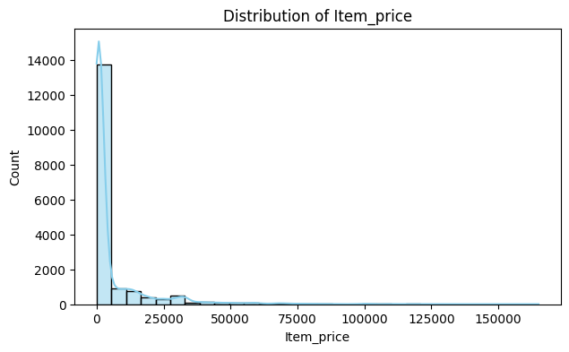
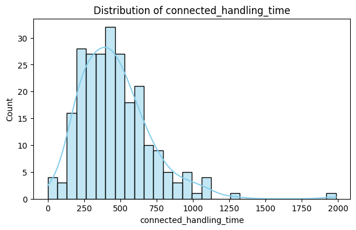
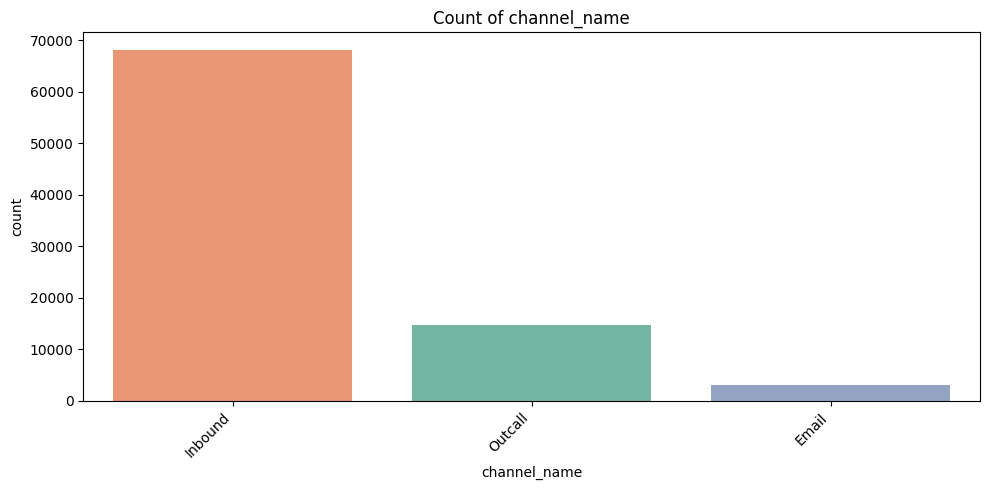
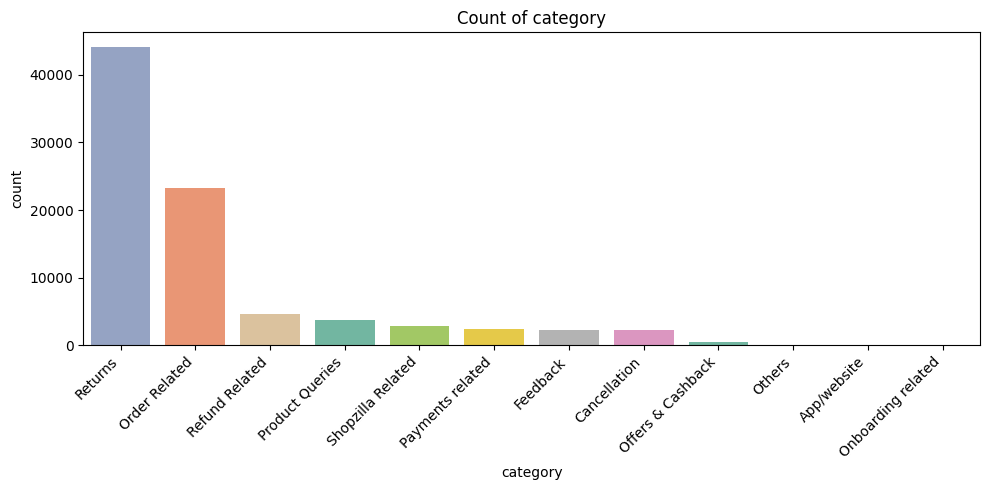
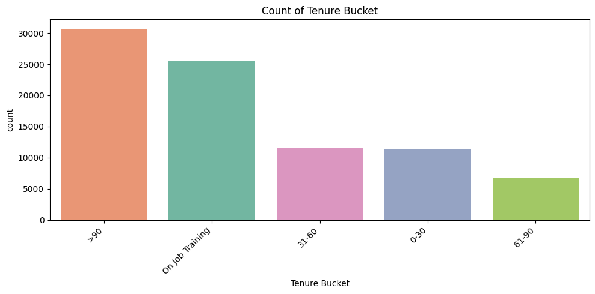
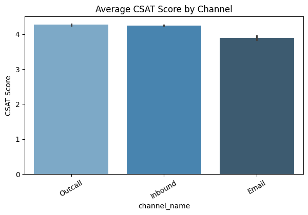
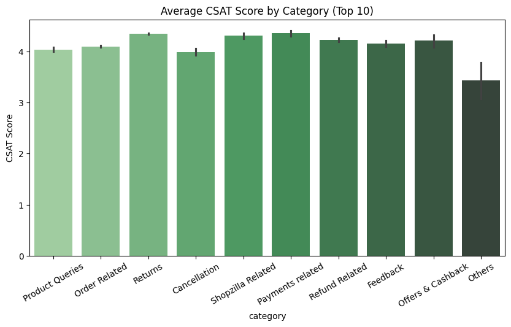
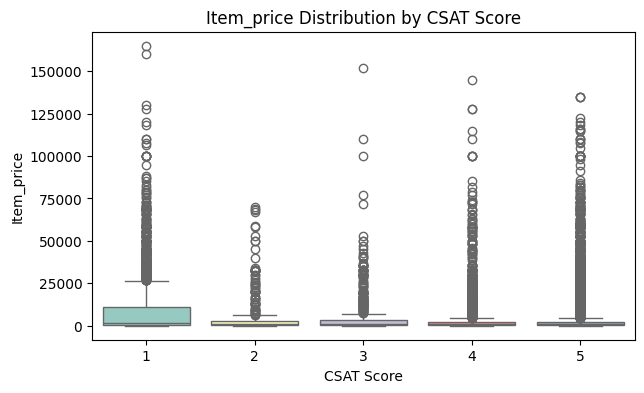

Week 3 Assignment – EDA Detailed Explanation
Week 3 Assignment Overview – Exploratory Data Analysis (EDA)
In Week 3, the focus of the assignment is on performing Exploratory Data Analysis (EDA) to gain meaningful insights from the provided E-commerce Customer Support Dataset. The objective is to explore, clean, and understand the dataset by applying various data visualization and summarization techniques. This involves analyzing the structure, quality, and relationships of data through detailed tables, descriptive statistics, and multiple graphical representations.
The task requires generating a Dataset Information Table to examine missing values and data types, followed by creating statistical summaries for numeric features such as Item_price, connected_handling_time, and CSAT Score. Next, several types of charts and plots—including distribution plots, count plots, bar charts, boxplots, and correlation heatmaps—are used to visually interpret patterns and trends. These visualizations help identify how different factors, such as customer service channels, product categories, handling time, and agent shifts, influence customer satisfaction.
Through this process, students are expected to demonstrate their ability to interpret data trends, detect anomalies, understand correlations, and extract actionable insights. By the end of this week’s assignment, the learner should be able to perform a comprehensive EDA, transforming raw data into a well-structured and meaningful analysis that can guide decision-making in improving customer support operations.
1. Dataset Information Table
| Column Name | Non-Null Count | Missing Values | Data Type |
|---|---|---|---|
| Unique id | 85907 | 0 | object |
| channel_name | 85907 | 0 | object |
| category | 85907 | 0 | object |
| Sub-category | 85907 | 0 | object |
| Customer Remarks | 28742 | 57165 | object |
| Order_id | 67675 | 18232 | object |
| order_date_time | 17214 | 68693 | object |
| Issue_reported at | 85907 | 0 | object |
| issue_responded | 85907 | 0 | object |
| Survey_response_Date | 85907 | 0 | object |
| Customer_City | 17079 | 68828 | object |
| Product_category | 17196 | 68711 | object |
| Item_price | 17206 | 68701 | float64 |
| connected_handling_time | 242 | 85665 | float64 |
| Agent_name | 85907 | 0 | object |
| Supervisor | 85907 | 0 | object |
| Manager | 85907 | 0 | object |
| Tenure Bucket | 85907 | 0 | object |
| Agent Shift | 85907 | 0 | object |
| CSAT Score | 85907 | 0 | int64 |
Purpose:
To get a high-level view of the dataset: how many rows are complete, what type of data is present, and which columns contain missing values.
Explanation of Columns:
- Column Name → Names of all features in your dataset.
- Non-Null Count → Number of rows where data is available.
- Missing Values → Number of rows where data is absent.
- Data Type → Type of data: int64 (integer), float64 (decimal), object (text).
Insights:
Missing Customer Remarks means many customers didn’t leave comments.
Missing Order_id could indicate data collection errors or anonymization.
Numeric columns like Item_price, connected_handling_time, and CSAT Score are mostly valid, which allows quantitative analysis.
Categorical columns like channel_name and category are mostly complete, useful for group-wise analysis.
Why it matters:
Missing data affects calculations (mean, median) and visualization. Helps decide whether to drop, impute, or ignore missing values in analysis.
2. Numeric Feature Statistics Table
| Statistic | Item_price | connected_handling_time | CSAT Score |
|---|---|---|---|
| Count (Non-Null) | 17206 | 242 | 85907 |
| Missing | 68701 | 85665 | 0 |
| Mean | 5660.77 | 462.40 | 4.24 |
| Median | 979.0 | 427.0 | 5.0 |
| Mode | 999.0 | 282.0, 299.0, 301.0, 418.0 | 5 |
| Std Dev | 12825.73 | 246.30 | 1.38 |
| Min | 0.0 | 0.0 | 1.0 |
| Max | 164999.0 | 1986.0 | 5.0 |
Purpose:
To summarize key statistics of numeric features (Item_price, connected_handling_time, CSAT Score).
Explanation of Metrics:
- Count (Non-Null): Number of valid entries.
- Missing: Count of missing values.
- Mean: Average value.
- Median: Middle value (less sensitive to outliers than mean).
- Mode: Most frequent value (helps identify repeated patterns).
- Std Dev: Measures spread or variability of data.
- Min / Max: Smallest and largest values; identifies outliers.
Insights for Each Column:
connected_handling_time: Mean may be high due to outliers (e.g., rare cases taking very long). Std deviation indicates how inconsistent handling times are across agents.
CSAT Score: Typically 1–5. Mean closer to 4–5 indicates overall high customer satisfaction. Std deviation shows variation among customers’ feedback.
Why it matters:
Helps identify central tendency, spread, and anomalies in numeric features. Important for later visualizations (histograms, boxplots, correlation).
3. Distribution Plots (Histograms + KDE)

Insights:
Interpretation:

Insights:
Interpretation:

Insights:
Interpretation:
Purpose:
To visualize the frequency of numeric values and distribution shape. KDE (Kernel Density Estimate) shows smooth probability distribution.
Why it matters:
Helps identify data distribution, skewness, and outliers visually. Guides decisions for scaling, transformations, or outlier treatment.
Key Takeaway: Histograms + KDE show data concentration, spread, skewness, and potential outliers.
4. Count Plots for Categorical Features

Interpretation:

Interpretation:

Interpretation:

Interpretation:

Interpretation:
Purpose:
To see frequency of each category.
Why it matters:
Identifies hotspots, workload distribution, and potential improvement areas.
Explanation by Column:
- channel_name: Which communication channel (email, chat, phone) is most used. Insights: focus training/resources on channels with high volume.
- category: Most reported product/service categories. Helps identify problem-prone product lines.
- Sub-category (Top 10 only): Only top 10 plotted → prevents x-axis overlap. Shows detailed product/service issues clearly.
- Agent Shift: Shows distribution of workload across shifts. Could relate to CSAT variation by shift.
- Tenure Bucket: Shows experience distribution among agents. Helps correlate experience with customer satisfaction.
Key Takeaway: Count plots identify volume hotspots, workload, and potential problem areas.
5. Bar Plots (Average CSAT Score by Category)

Insights:
Interpretation:

Insights:
Interpretation:
Purpose:
Shows average satisfaction (CSAT) per category/channel.
Why it matters:
Supports data-driven decision-making for improving service quality.
Key Takeaway: Bar plots highlight which channels/categories impact customer satisfaction and prioritize improvements.
6. Boxplots (Numeric Features vs CSAT Score)

Insights:
Interpretation:

Insights:
Purpose:
Visualizes the spread of numeric features across CSAT ratings.
Why it matters:
Helps identify patterns, outliers, and relationships visually. Guides business decisions (e.g., reduce handling time for high-value items).
Boxplot components:
- Box: Middle 50% of data (IQR)
- Line inside box: Median
- Whiskers: Range excluding outliers
- Dots outside whiskers: Outliers
Key Takeaway: Boxplots reveal relationships, spread, medians, and outliers. Helps identify process improvements.
7. Correlation Heatmap

Insights:
Item_price vs CSAT Score: Weak correlation → price not strongly linked to satisfaction.
Interpretation:
Purpose:
Shows linear relationships between numeric features.
Why it matters:
Helps identify features that influence satisfaction. Useful for predictive modeling (e.g., machine learning).
Correlation range:
- 1 → strong positive correlation
- -1 → strong negative correlation
- 0 → no correlation
Key Takeaway: Correlation heatmap helps identify numeric features influencing satisfaction, guiding business decisions and ML models.